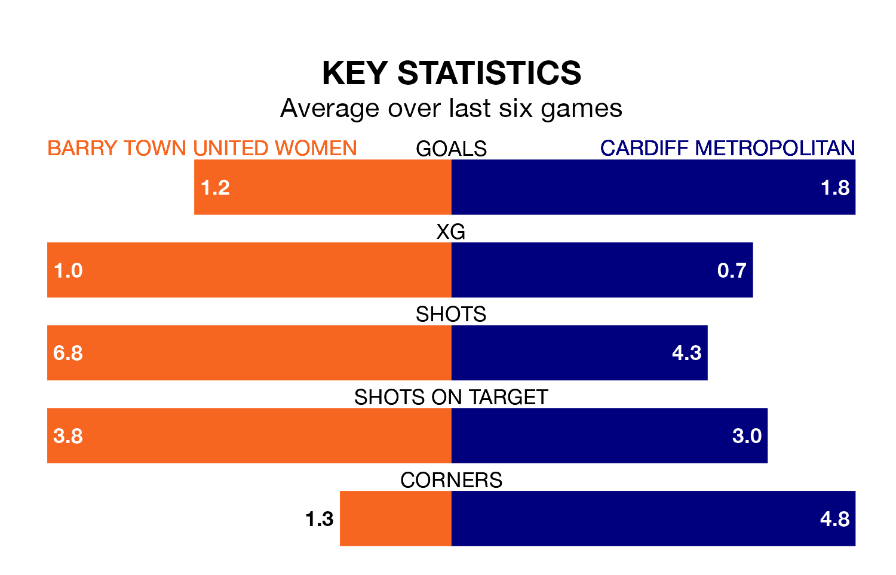

Sunday's late match at Jenner Park sees two relegation candidates play each other, as sixth-ranked Barry Town United Women host fifth-placed Cardiff Metropolitan.
Barry Town United have picked up 19 points from their first 19 Welsh Premier Women's League games, with six wins and one draw.
That is the same number of points as Cardiff Metropolitan have collected, having won five and drawn four.
In the last 10 years, Barry Town United and Cardiff Metropolitan have played each other on seven occasions. Barry Town United won two of them and Cardiff Metropolitan five.
On average, Barry Town United scored 1.1 goals and Cardiff Metropolitan 3.7 in those matches.
Their last meeting was on March 27, when Cardiff Metropolitan won 2-0 at home.
With 22 goals in 19 games so far this season, Barry Town United are the league's third-lowest scorers with 1.2 goals per game. And they are conceding more than average, letting in 43 goals at a rate of 2.3 per game.
Cardiff Metropolitan are also below average scorers, with 1.3 goals per game, compared to a league average of 1.8. They have conceded 2.1 goals per game.
The home team are in mixed form in the Welsh Premier Women's League, with two wins and a draw from their last six games.
With two wins and two draws over that period, the visitors' form is slightly better – they have taken eight points from 18, compared to Barry Town United's seven.
Barry Town United's last match was on March 31, a 3-0 loss against The New Saints Women.
Cardiff Metropolitan drew 1-1 with Pontypridd Town last time out, also on March 31, with on the scoresheet.
Updated: 16:41 (UTC), 04/04/24